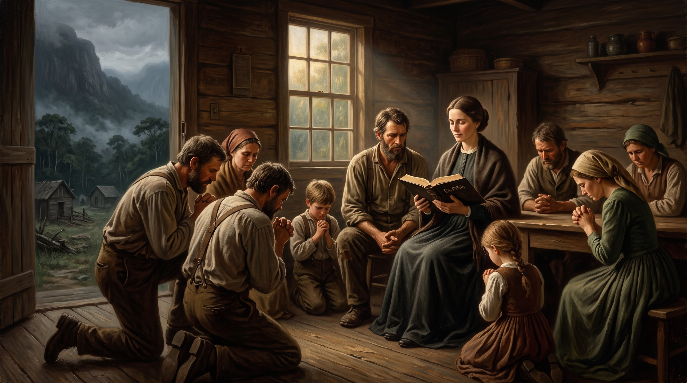

Jacobina Mentz Maurer, a Perseguição Eclesiástica, o Martírio e as Promessas para o Nosso Tempo

Há eventos na história da Igreja que exigem ser abordados com profundo temor e tremor. O episódio de Jacobina Mentz Maurer e dos fiéis reunidos no Morro Ferrabraz (região de Sapiranga e São Leopoldo, RS) entre 1868 e 1874 enquadra-se no rigor profético das advertências de Cristo aos Seus discípulos.
Jesus profetizou em Mateus 5:11-12 que os Seus seguidores seriam caluniados, e em João 16:2 alertou que aqueles que os matassem acreditariam estar prestando um serviço culto a Deus. A comunidade de Ferrabraz vivenciou essa palavra em seu grau mais dramático em solo brasileiro.
Os avós de Jacobina Mentz eram imigrantes de Hunsrück (Alemanha) que haviam emigrado para o Brasil fugindo de perseguições religiosas. Traziam no sangue a tradição do Pietismo germânico — a busca por um cristianismo vivo, focado no arrependimento, no jejum, na oração familiar e na rejeição do formalismo religioso sem vida.
O Despertamento na Casa dos Maurer:
Jacobina casou-se com João Jorge Maurer, carpinteiro e conhecedor do uso medicinal de ervas. Em meio à ausência de médicos e ao abandono pastoral nas colônias isoladas, o casal passou a acolher enfermos. Jacobina, acometida por episódios de transe e catalepsia acompanhados de visões e intensa leitura da Bíblia, orava pelos doentes. As curas começaram a acontecer. Os doentes curados permaneciam na casa para cultos de oração, estudo bíblico diário, cânticos e confissão de pecados.
A comunidade cresceu rapidamente. Seus membros adotavam uma conduta moral estrita: abstinham-se de bebidas alcoólicas, abandonavam os vícios, não frequentavam bailes ou festas profanas e dedicavam-se à caridade e ao socorro mútuo.
A perda de fiéis e do pagamento de dízimos para as paróquias locais despertou a fúria dos pastores luteranos institucionalizados e dos clérigos da região. Ao verem a população humilde abandonando os ritos formais para buscar a Deus na casa de Jacobina, as autoridades eclesiásticas e políticas iniciaram uma ostensiva campanha de difamação.
Acuada por constantes ataques de milícias locais armadas por comerciantes e colonos opositores, a comunidade do Ferrabraz viu-se sitiada. O clima de hostilidade degenerou em confrontos sangrentos.
Em meados de 1874, o Governo Provincial Imperial e o Exército Brasileiro enviaram centenas de soldados regulares acompanhados de voluntários civis para esmagar a comunidade. O Morro Ferrabraz foi bombardeado e invadido.
Em 2 de agosto de 1874, Jacobina Mentz Maurer e dezenas de seus seguidores — incluindo mulheres e crianças — foram caçados nas matas do Ferrabraz e sumariamente executados. Seus corpos foram enterrados em valas anônimas sem direito a sepultamento cristão, e seus livros e Bíblias foram queimados.
A tragédia do Ferrabraz alinha-se às advertências mais solenes das Escrituras:
O derramamento de sangue dos fiéis no Morro Ferrabraz carrega advertências e promessas proféticas de extrema urgência para a Igreja da atualidade:
| Elemento no Século XIX (Ferrabraz) | Ação dos Perseguidores | Aviso Profético para a Igreja Atual |
|---|---|---|
| O Rótulo "Mucker" | Uso de termos pejorativos para desumanizar os crentes. | A mídia e a religião oficial rotularão os fiéis como "fanáticos" e "extremistas". |
| O Incomodo das Curas e Oração | Esvaziamento dos templos sem vida e fúria dos clérigos. | A religiosidade fria sempre perseguirá o mover sobrenatural e autêntico do Espírito. |
| Aliança Estado / Religião | Uso de tropas militares para exterminar o grupo humilde. | O perigo mortal de a igreja confiar no poder político em vez de no Senhor. |
| Apagamento Histórico | Queima de Bíblias e difamação dos mortos. | Deus guarda a memória dos Seus santos e vindica o Seu povo na eternidade. |
O grito que ecoou no Morro Ferrabraz em 1874 não foi calado pelas balas nem pelas valas anônimas. Ele permanece diante do trono de Deus como um testemunho eterno de fidelidade no meio da dor.
Que o Senhor nos conceda discernimento, temor e firmeza para permanecermos inabaláveis ao lado da verdade, sabendo que aqueles que sofrem por amor a Cristo serão consolados e coroados na Sua vinda.